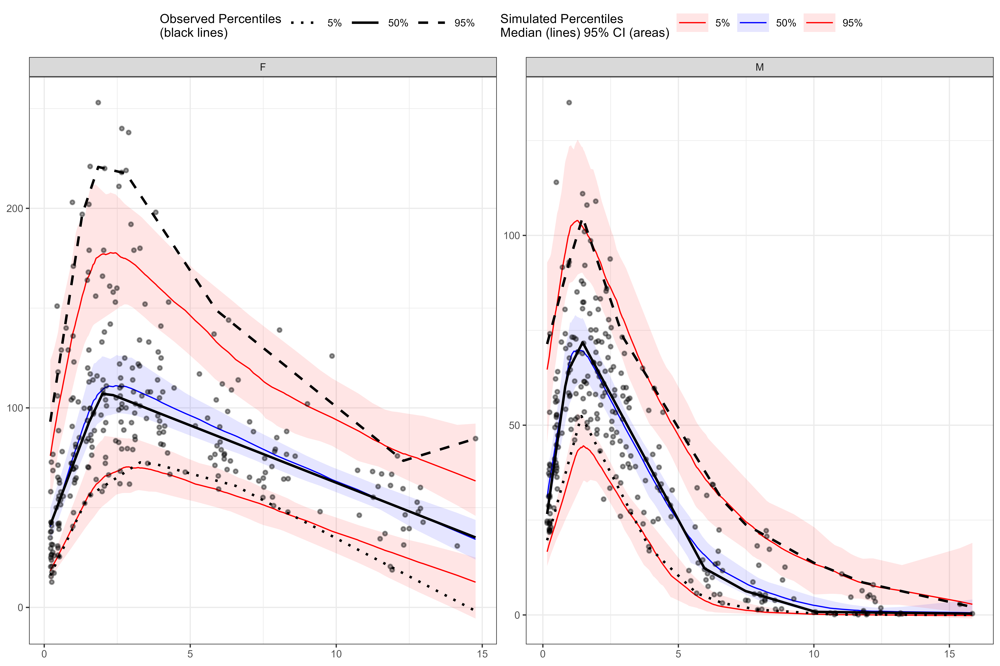
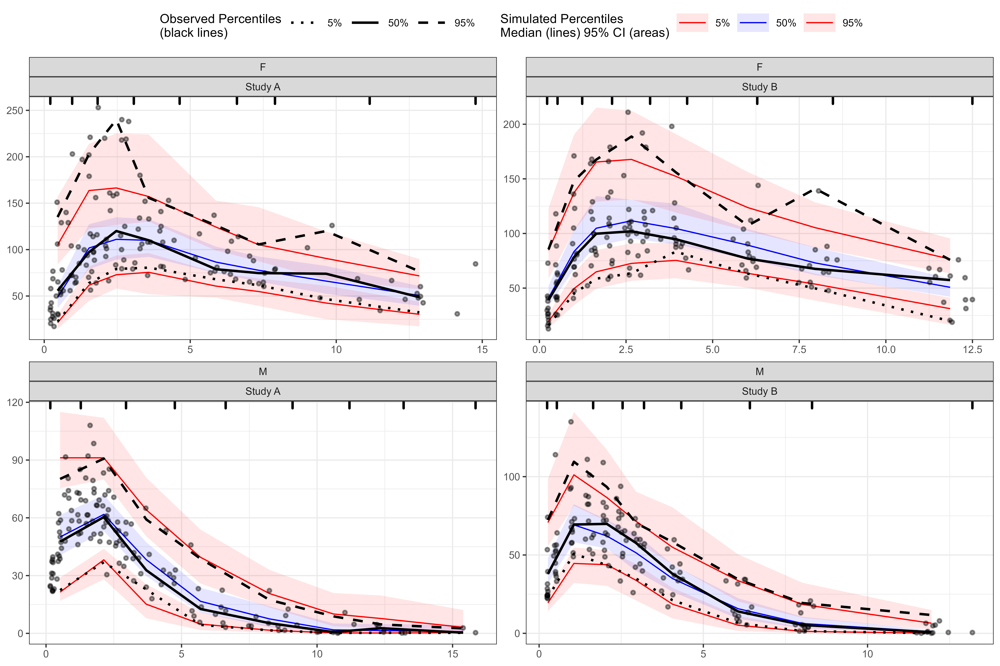
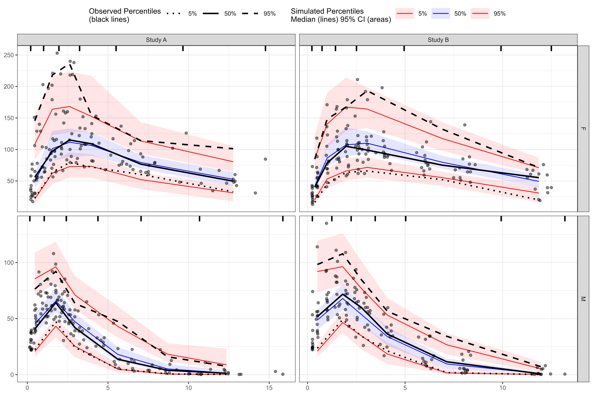
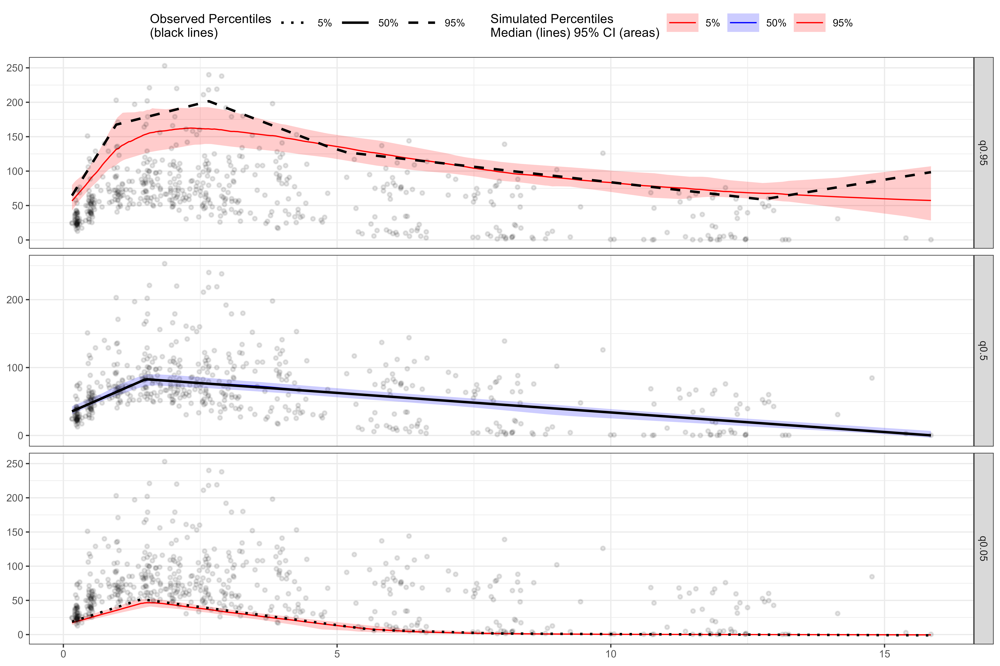
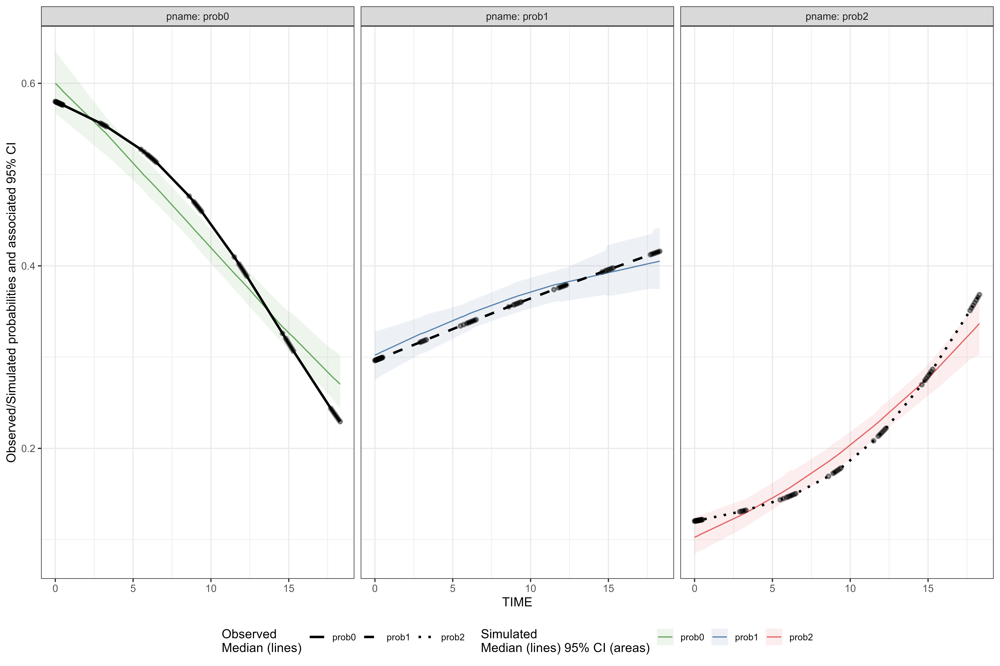
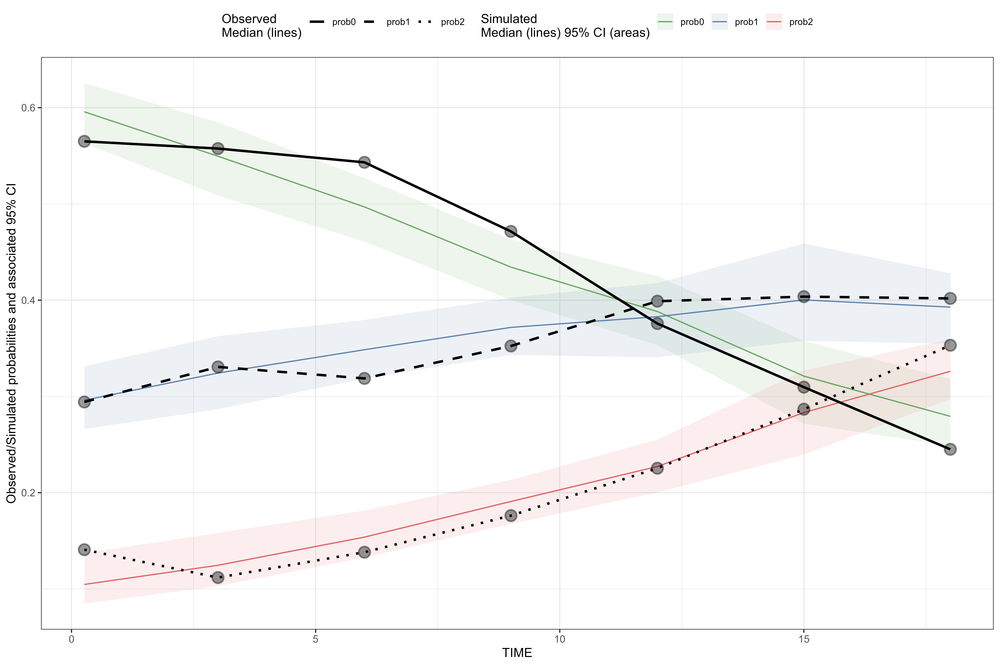
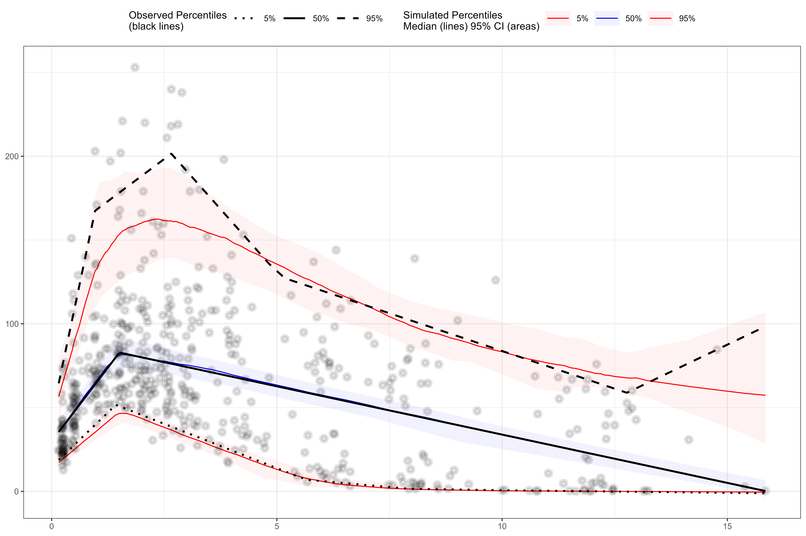
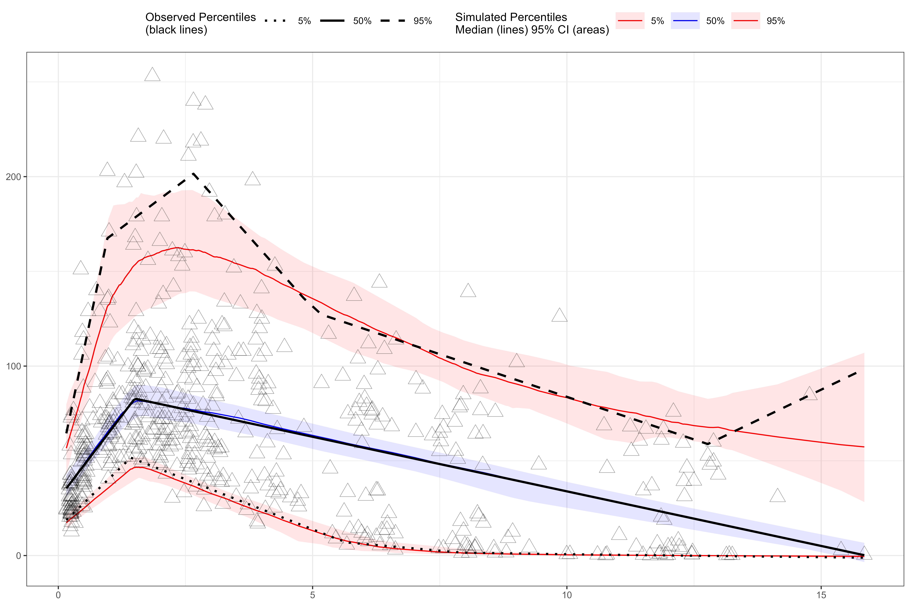
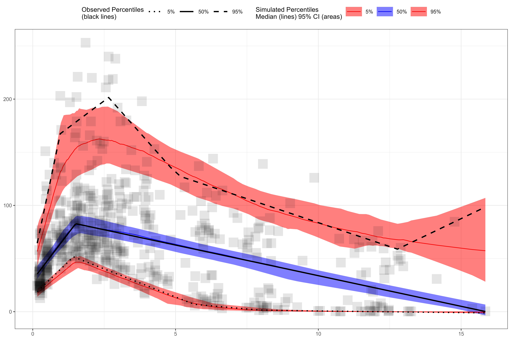

An overview of updates to plot() function in tidyvpc v1.3.0
Set plot output dimensions:
knitr::opts_chunk$set(fig.width=12, fig.height=8, dpi = 300) ## tidyvpc is part of Certara.R!
## Follow the link below to learn more about R package development at Cerara.
## https://certara.github.io/R-Certara/
library(magrittr)
obs_data <- obs_data[MDV == 0]
sim_data <- sim_data[MDV == 0]
vpc <- observed(obs_data, x=TIME, y=DV) %>%
simulated(sim_data, y=DV) %>%
stratify(~ GENDER) %>%
binless() %>%
vpcstats()
plot(vpc)
vpc <- observed(obs_data, x=TIME, y=DV) %>%
simulated(sim_data, y=DV) %>%
stratify(~ GENDER + STUDY) %>%
binning(bin = "jenks", nbins = 8) %>%
vpcstats()
plot(vpc)
vpc <- observed(obs_data, x=TIME, y=DV) %>%
simulated(sim_data, y=DV) %>%
stratify(GENDER ~ STUDY) %>%
binning(bin = "kmeans", nbins = 6) %>%
vpcstats()
plot(vpc)
We can use facet = TRUE argument to facet continuous VPC by quantile or facet categorical VPC by predicted probability.
vpc <- observed(obs_data, x=TIME, y=DV) %>%
simulated(sim_data, y=DV) %>%
binless() %>%
vpcstats()
plot(vpc, facet = TRUE, point.alpha = 0.1, point.size = 1, ribbon.alpha = 0.2)
vpc <- observed(obs_cat_data, x = agemonths, yobs = zlencat) %>%
simulated(sim_cat_data, ysim = DV) %>%
binless() %>%
vpcstats(vpc.type = "categorical")
plot(vpc, facet = TRUE, legend.position = "bottom")
Setup categorical VPC.
vpc <- observed(obs_cat_data, x = agemonths, yobs = zlencat) %>%
simulated(sim_cat_data, ysim = DV) %>%
binning(bin = round(agemonths, 0)) %>%
vpcstats(vpc.type = "categorical")Adjust point size.
plot(vpc, point.size = 4)
Setup continuous VPC.
plot(vpc, point.size = 1.5, point.stroke = 2.5, point.alpha = 0.1, ribbon.alpha = 0.05)
plot(vpc, point.size = 5, point.stroke = 0.3, point.shape = "triangle")
plot(vpc, point.size = 7, point.shape = "square-fill", point.alpha = 0.1, ribbon.alpha = 0.5)